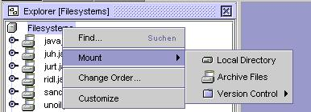
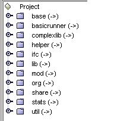
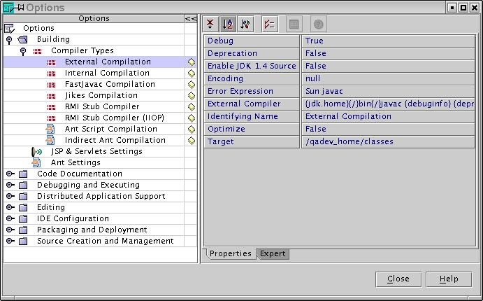

In the "Explorer" section of NetBeans (left on the screen) choose the "Filesystems" tab to mount the following directories and jars.
Choose the "project qadevOOo" tab to add the following packages to your project. Click right on "project qadevOOo" inside of the window, and go to add existing ... for this purpose
all packages can be found in the qadev_home directory and the packages "mod" and "ifc" that are located in the subfolder tests/java.
Set the output directory for the classes via Tools -> Options. The register card for this is located in Options -> Building -> Compiler Types. In the right part of the screen, you have to select a Target which determines the output directory. Select qadev_home/classes in the dropdown-list.
Finally set the main class via "Project -> Set Project Main Class...". Choose "org -> openOffice" and select Runner in the following tree structure.
-tdoc /qadev_home/testdocs -objdsc /qadev_home/objdsc -o sw.SwXBodyText
The first parameter is the path to the test documents, which are used
during test execution, and the second point to the object descriptions.
sw.SwXBodyText is the name of the test.
The example entry has to be adjusted to your file structure, and your operating system
(giving here an entry for Solaris/Linux).
Also assumed as default is that you would like to execute a Java test
and that an Office is running that can be connected.
soffice -accept=socket,host=localhost,port=8100;urp;
Port 8100 is the default port that the OOoRunner will use for connecting
the Office.Also see the General User Guide for more information.